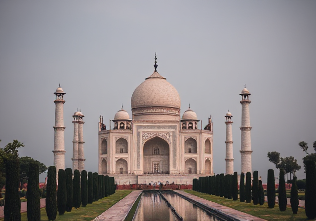
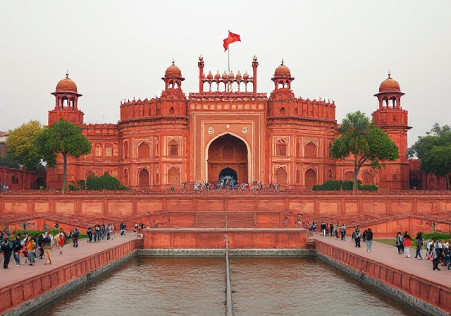
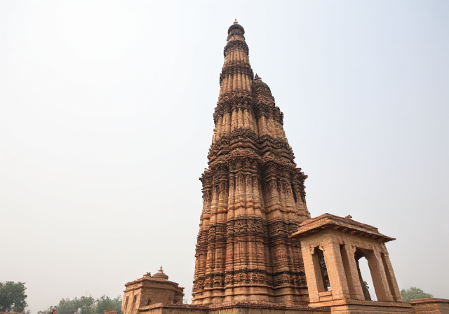
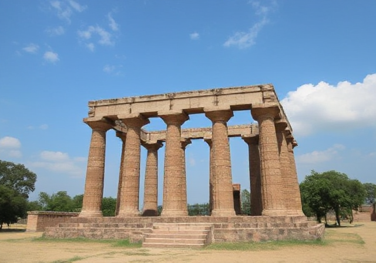

Historical Places In India

The Taj Mahal, located in Agra, India, is a stunning symbol
of love built by Emperor **Shah Jahan** in memory of his wife, **Mumtaz Mahal**,
between 1632 and 1653. This UNESCO World Heritage Site is crafted from white marble,
adorned with intricate carvings and inlays of precious stones, and blends **Persian,
Islamic, and Indian architectural styles**. Its symmetrical design features a central dome,
gardens symbolizing paradise, and a reflecting pool. Renowned as one of the **Seven Wonders
of the Modern World**, the Taj Mahal continues to captivate millions with its timeless beauty
and serves as a testament to eternal love and Mughal artistry.

The Red Fort, also known as Lal Qila, is a historic fort located in the city of Delhi, India. It was
constructed by the Mughal Emperor Shah Jahan between 1638 and 1648 and served as the main residence of the Mughal emperors
for around 200 years, until the British colonial period. The fort is a UNESCO World Heritage Site and is considered one of
the most iconic monuments of Mughal architecture.
The structure is made primarily of red sandstone, which gives it its name, and features a blend of Persian, Timurid, and
Indian architectural styles. The fort spans over 2 kilometers in length and is enclosed by massive walls that rise to a height
of around 33 meters. It covers an area of 254 acres

The Qutub Minar is a towering minaret located in the Mehrauli area of South Delhi, India. Standing at
73 meters (240 feet), it is the tallest brick minaret in the world and one of the most iconic landmarks of Delhi. Built in the early
13th century by Qutb-ud-Din Aibak, the founder of the Delhi Sultanate, the minaret was later completed by his successors. The Qutub
Minar is renowned for its intricate Islamic architecture, featuring detailed carvings, inscriptions in Arabic, and a series of balconies.
It is made of red sandstone, adorned with verses from the Quran and geometric patterns, reflecting the fusion of Persian, Afghan, and Indian styles.
The Qutub Minar is part of the Qutub Complex, which also includes other historic structures such as the Quwwat-ul-Islam mosque, the Iron Pillar of Delhi,
and several tombs. It is a UNESCO World Heritage Site and remains a prominent symbol of India's architectural and historical legacy.

The Agra Fort, located in Agra, India, is a grand Mughal fortress and a UNESCO World Heritage Site. Built primarily by Emperor
Akbar between 1565 and 1573, it is a stunning example of Mughal military architecture and is considered one of the most important historical sites in India.
The fort is constructed with red sandstone, with intricate marble inlays and decorative elements added later by Akbar’s successors, particularly Shah Jahan.
The fort covers an area of around 94 acres and is surrounded by a deep moat, with imposing walls that rise up to 20 meters.
Inside the Agra Fort, several important structures stand out, including the **Diwan-i-Aam (Hall of Public Audience)**, where the emperor would hold court, and
the **Diwan-i-Khas (Hall of Private Audience)**, which is more ornate and was used for meetings with select guests. The **Sheesh Mahal (Mirror Palace)** and **Jahangir
Mahal** are also notable for their beautiful Mughal-era designs. The fort's layout includes lush gardens, courtyards, and numerous mosques, such as the **Moti Masjid (Pearl Mosque)**,
which showcases the architectural brilliance of the era.
The Agra Fort also holds historical significance as the place where Emperor Shah Jahan was imprisoned by his son, Aurangzeb, and spent his final years gazing at the Taj Mahal, which he had
built in memory of his wife Mumtaz Mahal. Today, the Agra Fort is an important cultural heritage site and a popular tourist destination, offering a glimpse into the grandeur of the Mughal Empire.

The Sanchi was established as a Buddhist center by Emperor Ashoka, who ruled during the 3rd century BCE and was a key figure in spreading Buddhism across the Indian subcontinent.
Ashoka, after converting to Buddhism, commissioned the construction of the Sanchi Stupa and many other structures to commemorate the life of the Buddha and spread the teachings of Buddhism.
The site continued to be developed and expanded under later dynasties, including the Shungas and the Guptas, and became an important center of Buddhist art and culture. It remained a major site of Buddhist
activity until it was abandoned in the medieval period and was rediscovered in the 19th century by British archaeologist Sir John Marshall.